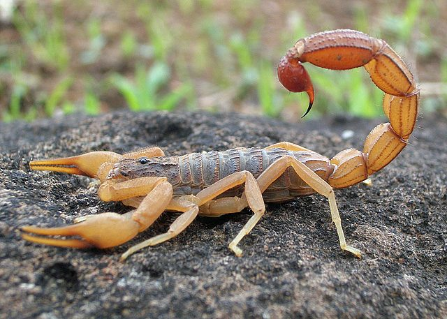

लाल बिच्छूIndian Red Scorpion
Hottentotta tamulus · Buthidae · SPD-0015

- Scientific name
- Hottentotta tamulus (Fabricius, 1798)
- Family
- Buthidae
- Hindi
- लाल बिच्छू
- Local names
- bichhu, lal bichhu, bichchhoo, bichhi
- Status here
- native
- IUCN
- not evaluated
- Review
- audited and independently read
When to look कब देखें
Present all year.
Uses and possibilities उपयोग और संभावनाएँ
Drawn from the documented uses in the profile below, where each is labelled traditional, current or a research lead. All uses →
लाल बिच्छू / Indian Red Scorpion
Hottentotta tamulus (Fabricius, 1798) — Buthidae
लाल बिच्छू — भारत का सबसे ख़तरनाक बिच्छू, और गाँव के पत्थर, ईंट, लकड़ी के ढेर और मिट्टी की दीवार की दरार में रहने वाला सबसे आम। लाल-भूरा, छह से नौ सेंटीमीटर, पतले चिमटे और मोटी, उठी हुई पूँछ। रात में कीड़े पकड़ता है; दिन में छिपा रहता है, और जूते, कपड़े या ईंट उठाते हाथ में तभी डंक मारता है। बच्चों के लिए इसका डंक जानलेवा हो सकता है — और सही इलाज से लगभग हमेशा बचाया जा सकता है। इसे जानना बचाव का पहला कदम है।
Quick Identification त्वरित पहचान
| Feature | Description |
|---|---|
| Size | 50–90 mm including the tail |
| Colour | Reddish-brown to orange-brown, often with a darker tail tip; some are nearly black on the body |
| Pincers | Slender and weak, not swollen: a warning sign, since thin-clawed scorpions rely on venom |
| Tail | Thick, five-segmented, carried curled over the back; the sting bulb large |
| Body | Granular, with keels (ridges) along the back; the tail segments ridged |
| Behaviour | Hides by day under objects and in cracks; walks slowly at night; glows blue-green under ultraviolet light |
Field tip: Lift a brick or a dry cowpat at the village edge in the monsoon and a reddish scorpion with thin claws and a fat tail may be under it. The rule for any scorpion is the same: thin claws and a thick tail mean dangerous venom; fat claws and a thin tail mean the opposite. This one is the first kind.
हिंदी — कैसे पहचानें: ईंट, पत्थर या सूखे उपले के नीचे लाल-भूरा बिच्छू, पतले चिमटे, मोटी पूँछ। याद रखने का नियम: पतले चिमटे और मोटी पूँछ = ख़तरनाक ज़हर; मोटे चिमटे और पतली पूँछ = उलटा। यह पहली किस्म है। रात में पराबैंगनी टॉर्च में नीला-हरा चमकता है।
Morphology आकारिकी
Biometrics:
| Measurement | Range |
|---|---|
| Total length | 50–90 mm |
| Body (without tail) | 25–40 mm |
| Tail length | 30–50 mm |
| Weight | 1.5–4 g |
| Young per litter | 20–40 |
Body: The prosoma (front body) bears a pair of median eyes and small lateral eyes, strong chelicerae (jaws) and the pedipalps ending in pincers; the mesosoma of seven segments; the tail (metasoma) of five segments and the telson with its bulb and sting.
Venom: A cocktail of small proteins that act on sodium and potassium channels of nerve cells, causing a storm of adrenaline release: the cause of the heart and lung complications that make this species dangerous.
Young: Born alive and carried on the mother's back until their first moult.
हिंदी: सामने चार छोटी और दो बड़ी आँखें; पूँछ के पाँच खंड और सिरे पर डंक की थैली। ज़हर नसों के चैनलों पर काम करके शरीर में एड्रेनालिन की बाढ़ ला देता है — इसी से दिल और फेफड़ों की जटिलताएँ होती हैं। बच्चे जीवित पैदा होते हैं और पहली केंचुल तक माँ की पीठ पर रहते हैं।
Behaviour & Ecology व्यवहार और पारिस्थितिकी
A night hunter of the ground. It waits at the mouth of its crevice or walks slowly over bare earth, sensing vibrations through hairs on the legs and pincers, and seizes crickets, cockroaches, beetles, spiders and smaller scorpions, stinging the larger ones. It needs little: a scorpion can go months without a meal and drinks the dew. Males wander in the monsoon looking for females; the courtship is the "dance" of linked pincers.
It lives alongside people because people make what it wants: stacked bricks, woodpiles, dung cakes, thatch, cracked mud walls and cowsheds full of insects. Its enemies are Spotted Owlet, Small Indian Mongoose, Bengal Monitor, House Centipede, large spiders and other scorpions.
हिंदी: रात का शिकारी। दरार के मुँह पर घात लगाए या नंगी ज़मीन पर धीरे चलता हुआ, टाँगों के बालों से कंपन भाँपकर झींगुर, तिलचट्टे, भृंग, मकड़ियाँ और छोटे बिच्छू पकड़ता है। महीनों बिना खाए रह सकता है। बरसात में नर मादा की तलाश में घूमते हैं। इंसान के बनाए ईंट के ढेर, लकड़ी, उपले, छप्पर और दीवार की दरारें इसे चाहिए, इसीलिए गाँव में रहता है। उल्लू, नेवला, गोह और कनखजूरा इसे खाते हैं।
Life Cycle / Phenology जीवन चक्र
| Stage / season | Event |
|---|---|
| June–September | Mating; males wandering; most stings |
| Gestation, several months | Young born alive, 20–40 in a litter |
| First month | Young on the mother's back until the first moult |
| 1–2 years | Six to seven moults to maturity |
| Lifespan | 3–5 years |
| November–February | Inactive in cold spells, deep in crevices |
हिंदी: बरसात में मिलन और सबसे ज़्यादा डंक; बच्चे जीवित जन्म लेकर महीने भर माँ की पीठ पर; एक-दो साल में वयस्क; तीन-पाँच साल की उम्र; सर्दी में दरारों में गहरा छिपा।
Host Plants or Prey आहार
- Two-Spotted Cricket, African Mole Cricket, American Cockroach and Oriental Cockroach, beetles, moths, House Centipede when it can, spiders, and other scorpions.
Predators / Natural Enemies शत्रु
- Birds: Spotted Owlet, Barn Owl, Indian Roller, House Crow.
- Mammals and reptiles: Small Indian Mongoose, Bengal Monitor, Oriental Garden Lizard on the young.
- Invertebrates: House Centipede, large Huntsman Spider, and larger scorpions.
- People: killed on sight wherever found.
Agricultural / Human Relevance कृषि प्रासंगिकता
The sting: what happens and what to do. The sting is immediately and severely painful. In most adults that is all: pain, swelling, sweating, which settles in hours. In children, and in some adults, the venom goes on to cause the serious syndrome: profuse sweating, cold hands and feet, vomiting, a racing or irregular heart, rising then falling blood pressure, and fluid in the lungs, which can kill within hours. The Indian red scorpion causes more deaths than any other scorpion in the country, nearly all of them children and nearly all preventable.
What to do. Go to the health centre at once, especially for a child; do not wait to see if it gets worse. The treatment that changed everything is prazosin, a cheap tablet that blocks the adrenaline storm, given early and repeated; developed by a rural physician, Dr. Bawaskar of Mahad, it has cut mortality from around 30% to under 1% where it is used. Antivenom helps if given early. Do not cut, suck, tie or apply herbs; do not give the child anything by mouth that might be vomited.
Prevention. Shake out shoes and clothes left on the floor; keep bricks, wood and dung cakes stacked away from doors and off the ground; fill wall cracks; a torch and footwear at night in the monsoon; beds away from walls, and a net tucked in. Check the children's sleeping mats.
Traditional and Ethnobotanical Use: many folk remedies are recorded in the ethnobotanical literature; none has evidence and all delay the one treatment that works.
Today. A hazard of every village of the plains, worst in the monsoon; the knowledge that prazosin exists and that the health centre has it is the most useful fact in this profile.
Research direction (a lead, not a result). Antivenom and prazosin protocols are settled; the open questions are about distribution of the dangerous species and the timing of stings, which village health records could answer. A map of where stings happen in the district would be a genuine contribution.
हिंदी: डंक: तुरंत बहुत दर्द। ज़्यादातर वयस्कों में बस इतना। बच्चों में, और कुछ वयस्कों में, ज़हर आगे बढ़ता है — बहुत पसीना, ठंडे हाथ-पैर, उलटी, दिल की धड़कन बिगड़ना, फेफड़ों में पानी — जो घंटों में जानलेवा हो सकता है। भारत में बिच्छू से सबसे ज़्यादा मौतें इसी से, लगभग सब बच्चे, लगभग सब रोकी जा सकने वाली। क्या करें: तुरंत स्वास्थ्य केंद्र, खासकर बच्चे को; इंतज़ार नहीं। प्राज़ोसिन नाम की सस्ती गोली, जल्दी और दोहराकर, मृत्यु को 30 प्रतिशत से 1 से नीचे ले आई है — महाड के डॉ. बावस्कर की खोज। काटना, चूसना, बाँधना, जड़ी-बूटी — कुछ नहीं। बचाव: जूते-कपड़े झाड़कर पहनें, ईंट-लकड़ी-उपले दरवाज़े से दूर और ज़मीन से ऊपर, दरारें भरें, बरसात की रात टॉर्च और जूते, बिस्तर दीवार से हटाकर, मच्छरदानी दबाकर।
Expected Locally स्थानीय रूप से अपेक्षित
Not a field record. Written from published accounts for eastern Uttar Pradesh. No confirmed local sighting yet — if you have seen it, that is what the atlas needs.
अभी तक स्थानीय पुष्टि नहीं। यह विवरण प्रकाशित स्रोतों से है, किसी अवलोकन से नहीं।
To be expected under bricks, stones, dung cakes and woodpiles and in wall cracks across the district, and the species responsible for the serious scorpion stings seen at local health centres. A photograph of one found under a brick (taken without touching it) is a confirmed record; the health centre's sting register, if it exists, is a better one.
Distribution वितरण
Global range: India, Nepal, Pakistan, Bangladesh and Sri Lanka.
In India: Throughout the peninsula and the Gangetic plain; the dominant dangerous scorpion from Maharashtra and Karnataka to Uttar Pradesh and Bihar.
In Uttar Pradesh: Statewide in dry and semi-dry ground.
In Basti district / eastern UP: Expected around every village.
Research Questions शोध प्रश्न
Anyone can investigate these | कोई भी इन प्रश्नों की जाँच कर सकता है
- How many scorpion stings did the health centre see last year, and in which months? / पिछले साल स्वास्थ्य केंद्र में कितने बिच्छू के डंक आए, किन महीनों में? — Ask; that is real data.
- Where in the house or yard were people stung? — Shoes, beds, woodpiles: a list points at prevention.
- Do stacked bricks near the door shelter scorpions? / दरवाज़े के पास रखी ईंटों के नीचe बिच्छू हैं क्या? — Lift a few carefully with a stick on a monsoon evening, from a distance.
- Does an ultraviolet torch find them at night? — Walk the yard with one; they glow.
- Does the ASHA worker know prazosin, and does the PHC stock it? — Ask; the answer may save a child.
Similar Species मिलती-जुलती प्रजातियाँ
| Species | How to tell apart | हिंदी |
|---|---|---|
| Black fat-tailed scorpions (Heterometrus) | Much larger, black, with huge heavy pincers and a thin tail; painful but not dangerous | काला, बड़े मोटे चिमटे, पतली पूँछ; ख़तरनाक नहीं |
| Other small buthids (Lychas, Isometrus) | Smaller, slender, yellowish or mottled, thin tail; stings painful, rarely serious | छोटे, धारीदार |
| Whip scorpions and pseudoscorpions | No sting; a whip-like tail or none | डंक नहीं |
Field rule: A reddish-brown scorpion of medium size with thin pincers and a thick tail is the Indian red scorpion, and the one to treat as a medical emergency in a child.
Taxonomy & Classification वर्गीकरण
Original description. Described by Fabricius in 1798 as Scorpio tamulus in Supplementum Entomologiae Systematicae, p. 294, from "Tranquebar" on the Tamil coast; the epithet refers to the Tamil country. Long known as Mesobuthus tamulus in the medical literature; placed in Hottentotta by Kovařík in 2007.
Subspecies. Several have been described on colour and locality (gangeticus, concanensis, sindicus); their status is disputed and most authors treat the species as variable.
Family and order placement. Buthidae, the family that holds nearly all dangerous scorpions; order Scorpiones, class Arachnida. Kept under "spiders" in this atlas as the arachnid category.
Phylogenetic notes. Hottentotta is an Old World buthid genus of about 40 species across Africa and Asia; the venom of tamulus is among the best characterised of any scorpion because of its medical importance.
IUCN status rationale. Not evaluated. Common.
Photo Gallery फोटो गैलरी
Photos needed आवश्यक फोटो
- [ ] Scorpion under a lifted brick, from a safe distance (ईंट के नीचे)
- [ ] Close view showing thin pincers and thick tail (चिमटे और पूँछ)
- [ ] Glowing under ultraviolet light (पराबैंगनी में)
Atlas Connections संबंधित प्रजातियाँ
- House Centipede — eats it and is eaten by it
- Spotted Owlet and Small Indian Mongoose — its main predators
- Two-Spotted Cricket and American Cockroach — its prey
- Russell's Viper — the other village animal whose bite is a medical emergency with a known treatment
References संदर्भ
- Fabricius, J.C. (1798). Supplementum Entomologiae Systematicae, p. 294. Hafniae. [original description, as Scorpio tamulus]
- Pocock, R.I. (1900). The Fauna of British India, including Ceylon and Burma. Arachnida. Taylor and Francis, London.
- Kovařík, F. (2007). A revision of the genus Hottentotta Birula, 1908, with descriptions of four new species. Euscorpius 58: 1–107.
- Bawaskar, H.S. & Bawaskar, P.H. (2012). Scorpion sting: update. Journal of the Association of Physicians of India 60: 46–55.
- Bawaskar, H.S. & Bawaskar, P.H. (2011). Efficacy and safety of scorpion antivenom plus prazosin compared with prazosin alone for venomous scorpion (Mesobuthus tamulus) sting: randomised open label clinical trial. BMJ 342: c7136.
- Tikader, B.K. & Bastawade, D.B. (1983). The Fauna of India: Scorpions (Scorpionida: Arachnida). Zoological Survey of India, Calcutta.
- Chippaux, J.-P. & Goyffon, M. (2008). Epidemiology of scorpionism: a global appraisal. Acta Tropica 107(2): 71–79.
- GBIF Occurrence Data — Hottentotta tamulus, India (2026).
Source file: species/fauna/spiders/indian_red_scorpion.md